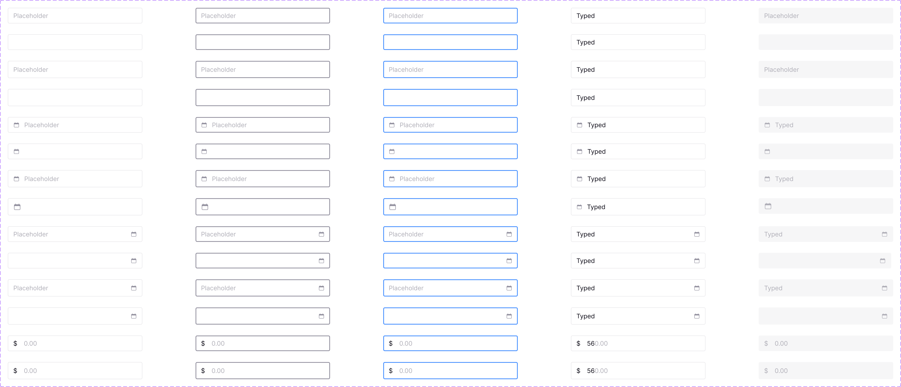
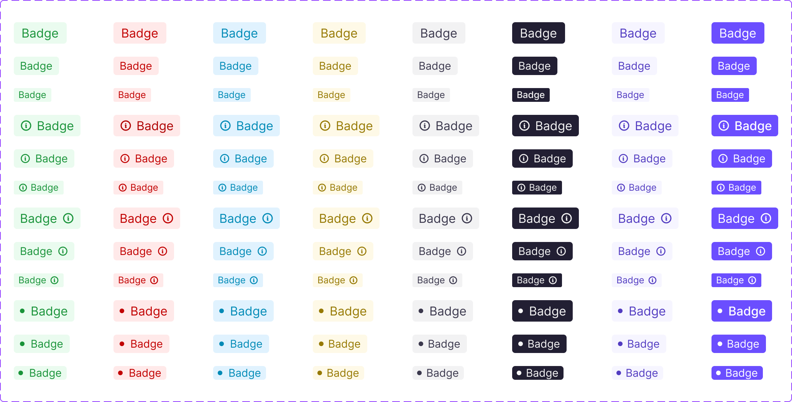
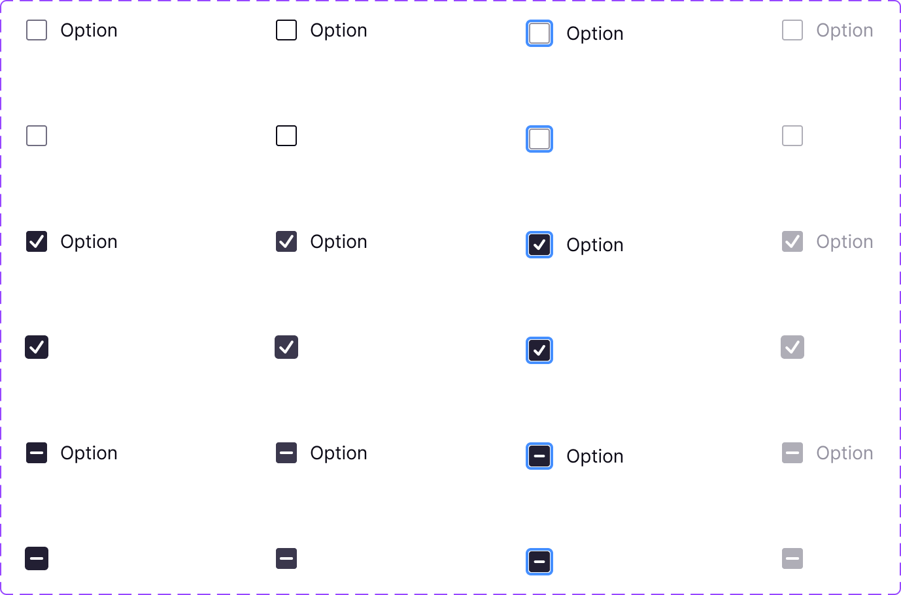
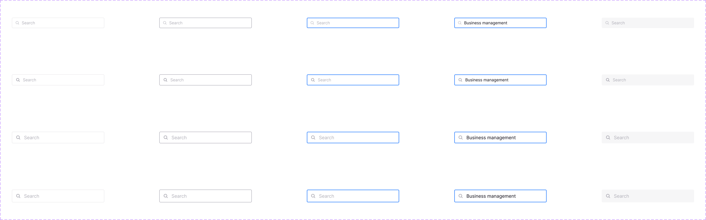

Design System · Component Library
CleverX Design System
When I joined CleverX, there were no designs — no Figma files, no shared components, no visual reference for how anything should look or behave. The development team was building UI directly in code, and every page was made independently. Colors were slightly off between pages, buttons looked different depending on where they lived, and there was no consistent hierarchy.
The product worked, but it didn't feel like one product. That's when we decided to build a proper design system from the ground up.
Context
The Problem
CleverX's product worked, but it didn't feel like one product. Without a designer or a shared design tool, every page had been built in isolation:
- The same button existed in slightly different styles depending on which page it lived on
- Colors were close but never quite the same — similar blues, slightly different greys, no shared palette
- Spacing and padding were inconsistent, so elements that should have felt aligned didn't
- There was no typographic hierarchy — pages felt flat, with no clear visual distinction between headings, body text, and labels
- Developers had no reference to design against, so every implementation involved guesswork
The inconsistency wasn't just a visual issue. It slowed everything down — developers had to make design decisions they shouldn't have been making, and every new feature introduced new one-off patterns instead of reusing what already existed.
Foundation
Starting with Brand, Not Components
We didn't start by drawing buttons. We started by asking what CleverX actually stands for.
Before touching any UI, we ran a brand exercise as a team. We defined CleverX's vision, mission, and core values together. This wasn't a side project — it directly shaped every visual decision that followed.
Color selection came out of this exercise. Instead of picking a palette because it "looked nice," we researched what different colors communicate and chose our primary, secondary, tertiary, and semantic colors based on how they reflected CleverX's brand values. Every color in the system traces back to a deliberate decision rooted in what we wanted the product to feel like.
This foundation — brand first, then design system — meant the system wasn't just consistent. It was intentional.
Process
Building in Priority Order
We needed to get the system into production fast, so we prioritized ruthlessly.
Phase 1: Foundation. Colors, typography, and buttons. These three touch every single page in the product, so standardizing them first had the widest immediate impact. We updated the full color palette — primary, secondary, tertiary, and semantic colors — established a type scale with clear hierarchy, and built out button components with all their variants and states.
Phase 2: Core inputs and patterns. Input fields, cards, modals, badges, and navigation components. These were the building blocks of CleverX's most-used pages — study creation, dashboards, and participant management.
Phase 3: Incremental expansion. From there, we built new components as the product needed them. Every new feature was an opportunity to add to the system rather than creating one-off patterns. Over time, this grew to 50+ documented components.
This phased approach meant the system was useful from day one instead of being a months-long project that shipped all at once.
Thinking
The Hard Decisions
Building components is straightforward. Defining the rules around them is where it gets difficult.
Buttons were the biggest debate. How many styles do we actually need? When does a user see a primary button versus a default? How do we handle destructive actions — is it always red, or only in certain contexts? How many buttons can appear on a single page before it becomes overwhelming? What's the alignment rule — left-aligned, right-aligned, or does it depend on the context?
We studied how Material Design and Apple's Human Interface Guidelines handle these decisions. Not to copy them, but to understand the reasoning behind their rules — why certain patterns exist, what problems they solve, and how they scale. Then we adapted those principles for CleverX's specific needs.
Input fields required similar thinking. Where do labels go — above the field, inside it, or beside it? How do we handle required versus optional fields? What does an error state look like, and where does the error message sit? Every decision had to work not just on one page, but across every form in the product.
These weren't just visual decisions. They were rules that every future page would follow, so getting them wrong meant compounding the mistake across the entire product.
Adoption
Getting It Adopted
Building the system was only half the work. Getting developers to actually use it was the other half.
We documented everything in the same Figma file — not in a separate wiki or document that nobody checks. Each component included its variants, states, spacing rules, and usage guidelines: when to use it, when not to, and how it differs from similar components. Developers could reference a single file for any design question.
But documentation alone wasn't enough. I had to actively push for adoption — reviewing implementations, flagging when old patterns were used instead of system components, and making the case that short-term effort to switch would save time on every future feature. Over time, the system became the default — but it didn't happen automatically.
Deliverables
What I Designed
The full design system included:
- 25+ components & 100+ tokens — Buttons, inputs, cards, modals, tables, navigation, badges, tooltips, search fields, checkboxes, and more. Each built with all variants, states, and responsive behavior defined
- Design tokens — Color, typography, spacing, and sizing — all named, documented, and traceable back to brand decisions
- Usage documentation — Rules for every component: when to use it, spacing requirements, alignment rules, and do's and don'ts. All housed in Figma alongside the components





Impact
What Changed
- Introduced design tooling (Figma) and a design-driven workflow to a team that previously had no shared design process
- Built CleverX's first design system from scratch as a two-person design team — a full token system, and documentation — creating a single source of truth for the entire product
- Rooted every visual decision in brand strategy through a foundational brand exercise, ensuring the system was intentional and not just consistent
- Gave developers a reliable reference that eliminated guesswork during implementation and cut repeated conversations about spacing, color, and component behavior
- The system became the foundation for CleverX's product UI for years and is still in use today